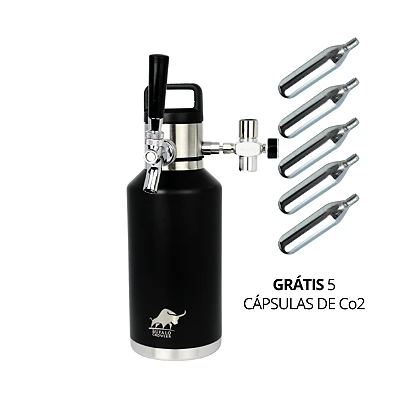
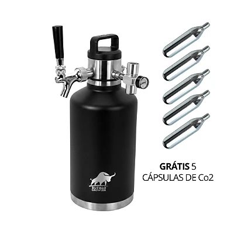
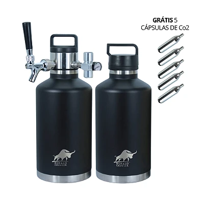
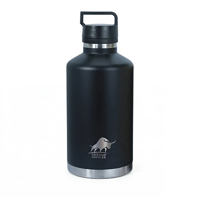
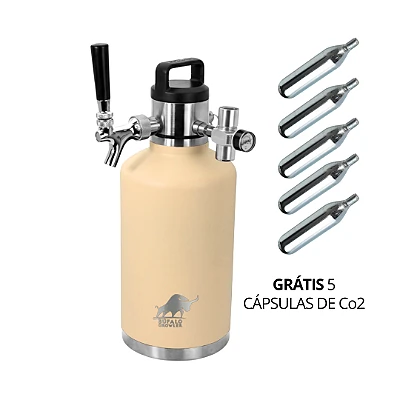
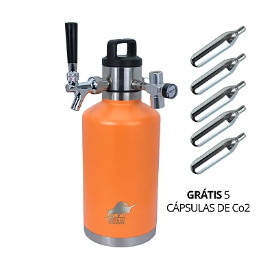
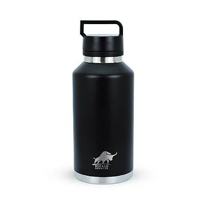
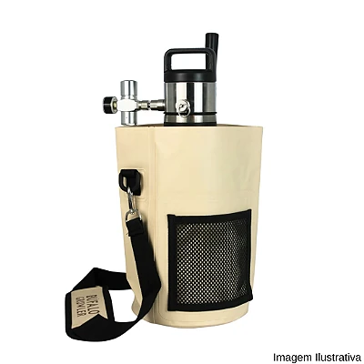

BÚFALO ON TAP · COM VOCÊ, LÁ FORA.
Seu próximo
brinde.
Do seu jeito.
Encontre a chopeira que combina com seus planos. Da conversa a dois à manada reunida.
Encontre sua On TAPSeu bar vai com você.
VÁ DIRETO AO QUE VOCÊ GOSTA
Já sabe o que procura?
Conheça a linha pelo seu jeito de servir.

On TAP2 L

On TAP3,5 L

Kit Mestre7L

Growlerse acessórios
EM CADA DETALHE. EM CADA GOLE.
Qualidade
que se prova.
Rafael Cheruti apresenta a On TAP e mostra o ritual de servir com pressão.
Escolha sua chopeiraRafael Cheruti é sommelier de cervejas, mestre em estilos e criador do Método Cerveja Descomplicada.
Perfil profissionalCHOPEIRAS · 2 L
On TAP 2 L
Chope na torneira. Onde você estiver.
- Sistema de 2 L com dispensador
- Regulador com manômetro
- 5 cápsulas de CO₂ de 16 g
Varanda e encontros a dois.
O barril tem 1,9 L; com o dispensador, o sistema tem capacidade de 2 L, conforme a loja.
R$ 1.250,00
Quero minha On TAP 2 LESCOLHA A SUA COMPANHIA
On TAP 3,5 L
A mesma chopeira. Escolha sua cor.
CHOPEIRAS · 3,5 L
On TAP 3,5 L · Preta
Mais chope. O mesmo ritual.
- 3,5 L
- Aço inox 18/8
- 5 cápsulas de CO₂ de 16 g
Churrasco e amigos reunidos.
R$ 1.450,00
Quero minha On TAP preta
CHOPEIRAS · 3,5 L
On TAP 3,5 L · Creme
O brinde combina com a sua casa.
- 3,5 L
- Acabamento creme
- 5 cápsulas de CO₂ de 16 g
Receba bem, sirva do seu jeito.
R$ 1.450,00
Quero minha On TAP creme
CHOPEIRAS · 3,5 L
On TAP 3,5 L · Laranja
Sua On TAP com atitude.
- 3,5 L
- Isolamento a vácuo
- Regulador com manômetro
Destaque para a mesa do encontro.
R$ 1.450,00
Quero minha On TAP laranjaArraste para explorar as opções
MONTE DO SEU JEITO
Sua chopeira.
Suas escolhas.
Você também pode comprar os barris Kundi separadamente e escolher peças e acessórios conforme a sua necessidade. Reponha as cápsulas de CO₂ quando precisar, sem comprar um novo conjunto.
ESCOLHA A SUA COMPANHIA
Growlers Kundi
Escolha a capacidade para o seu próximo encontro.

GROWLERS · KUNDI
Growler Kundi 2 L
Abasteça. Leve. Brinde.
- Aço inox 18/8
- Isolamento a vácuo
- Tampa com alça
Seu rótulo favorito vai junto.
Nome comercial da loja: Kundi 2 L. A descrição técnica informa 1,9 L; confirme a capacidade com a equipe antes da compra.
R$ 380,00
Quero meu Kundi 2 LGROWLERS · 3,5 L
Growler Kundi 3,5 L
Mais espaço para o seu rótulo.
- 3,5 L
- Aço inox 18/8
- Tampa com alça
Leve o chope para o encontro.
R$ 480,00
Quero meu Kundi 3,5 LArraste para explorar as opções

ACESSÓRIO · TRANSPORTE
Bag Tiracolo para Chopeira
Seu growler vai de mãos livres.
- Lona de PVC
- Alça regulável
- Ombreira acolchoada
Alça regulável para o próximo destino.
Acessório de transporte. Confira os itens inclusos e a compatibilidade na página do produto.
R$ 168,00
Quero minha bagCUIDE DA SUA ON TAP
Peças, acessórios e reposição.
Compre componentes avulsos e reponha suas cápsulas de CO₂ sempre que precisar.

PEÇAS E REPOSIÇÃO
Kit 5 Ampolas de CO₂
Reposição para continuar servindo seus brindes.
Confira a compatibilidade e os detalhes na loja.
Ver produto →
PEÇAS E REPOSIÇÃO
Torneira tipo americana
A peça para servir com praticidade.
Confira a compatibilidade e os detalhes na loja.
Ver produto →
PEÇAS E REPOSIÇÃO
Regulador de pressão CO₂
Controle a pressão do seu sistema de extração.
Confira a compatibilidade e os detalhes na loja.
Ver produto →ESTAMOS AQUI PARA AJUDAR
Bora tirar dúvidas?
As respostas para as perguntas mais frequentes sobre sua chopeira Búfalo.
Posso comprar o barril Kundi separadamente?
Sim. Os barris Kundi 2 L e 3,5 L têm seus próprios cards e links de compra nesta página.
É possível comprar torneira, regulador e cápsulas separadamente?
Sim. Consulte os três produtos na seção de peças, acessórios e reposição acima. Confira a compatibilidade de cada componente com sua chopeira.
As cápsulas de CO₂ podem ser reutilizadas?
As cápsulas descartáveis de 16 g são de uso único. Quando acabarem, adquira cápsulas novas compatíveis com seu equipamento.
Qual a diferença entre o Kundi 2 L e o 3,5 L?
A principal diferença é a capacidade anunciada. O modelo 3,5 L comporta mais bebida; para o Kundi 2 L, confirme a capacidade útil na descrição do produto.
Posso montar minha chopeira comprando peças avulsas?
Há barris e componentes vendidos separadamente. Antes de montar um conjunto, consulte nossa equipe para confirmar todas as peças necessárias e a compatibilidade.
Como saber qual regulador ou torneira comprar?
Verifique o modelo do seu equipamento e as especificações da peça. Se tiver dúvidas, fale com nossa equipe pelo WhatsApp antes de concluir a compra.
Kit Mestre Cervejeiro + Bag Tiracolo de brinde.